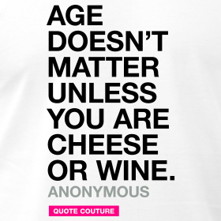

I turned 29 when I started my PhD. My supervisor is almost my age. My colleagues are 4 to 5 years younger than me. Most of my friends started a family, they are getting married, buying a house and they earn much more than I do.
Now, I have absolutely no regret. I assume my choice with great enthusiasm and I am confident in my future. Therefore, I consider that I started a PhD at MY most ideal age.
In other words, as long as you believe you made the adequate choice, then your age would be the most ideal age to do whatever you feel like doing. When I started my bachelor in psychology, one of my class-mates was 41 years old, he is now a psychologist. Age doesn’t matter as long as you consider that this is a place for you.
However, there are variables (more or less related to age) that might weigh a lot:
- If you didn’t study for the last 2/3 years and from one day to the next, you have to focus and learn 40 hours a week, it might be tough.
-If you are applying for a position but you finished your master degree 3 years ago and worked in another field, it’s gonna be hard to convince the supervisor to hire you.
-If you cannot afford to work at least 8 hours a day and sometimes put some on weekends because of your duties (e.g. children), you might struggle a bit to get the required number of publications you need.
-If you were working and earning a lot, it
Doing a PhD doesn’t require you to have the best cognitive functions ever. There is no need to be a genius. There is no need to have a completely free schedule, some successful PhDs had research-unrelated responsabilities (part-time job, children, caring a disabled family member, etc…). And there is no need to be very young (or to wait to grow older) either.
In sum, I think there is no such thing like an ideal age to do a PhD. As long as you consider that this is an appropriate moment regarding your goals, abilities and background, then your age is the appropriate one.
Have fun!
